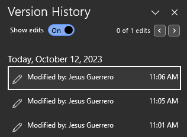
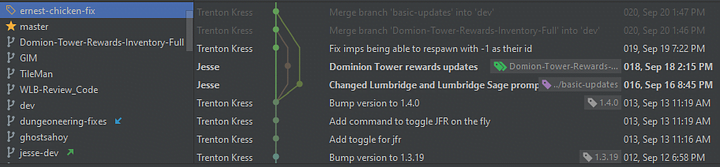

Let us say you want to save your work in Microsoft Word. But, instead of saving just one version of Word, you, in fact, want to save a history of changes so that you can always see your previous text.
If you didn't know, Word has this feature. Take a look:
These previous saves are known as "versions". It is a version of the Word document which was saved in the past.
Now, imagine there are multiple people writing in this Word document, but you still want to save versions for each person. How can we merge their work, show their history, and pick which parts of the document we want?
This is version control. Git is a version control software for code. It controls the versions of the code or the history for multiple users.
Git, is independent of programming. Just like Word, where the text itself is simply saved but not manipulated, version control can be used for any application.
In addition, there are many different software for version control with code. There is Git, subversion, vesta and many more. Companies often use their own proprietary version control as well.
Not only this, there is a local client-side version of version control and a server-side version control. Imagine this. You want to save all the versions of your code to your local computer. You love it and you save multiple versions.
However, you lose your data due to some unforeseen event. What happens to the files? Well, you lose the files and all the version history, just like with Word documents.
This is where server-side Git comes in. Two popular examples you might recognize are GitHub & GitLab. Think of it like Google Drive or OneDrive, where you save on a cloud all your versions and all your work.
If you upload your version history to a server-sided Git service then losing data is now longer accounted by you, but GitHub & GitLab.
But, what is different between the server-side and client-side Git? Well, nothing really. Git is a small program which works the same on all devices. All GitHub (well use this as an example) did was automate Git with code on their server, then display that information on a webpage.
Essentially, you are using Git on these servers. It is just there is an additional layer to the software which provides a web based GUI along with features GitHub wanted to implement.
How to Learn Version Control?
To truly learn version control, you must learn client-side first. Recognize it is the exact same software on the GitHub side, with just a layer of automation. You are saving the local files in the same way on the server.
Start with learning the terminology and practicing the commands. Personally, me myself, I love JetBrains Git GUI for my local Git. It looks like this:
This is how I learned Git. But, many people learn from straight command line. My only issue is, you can't visualize the changes made to the version history as easily.
Things I recommend avoiding are pretty much every other GUI interface. JetBrains is the best in this department. Now, if you have a computer that is ultra low resource and you want to use a GUI, then I recommend Git Lens for Visual Studio Code. It is much faster and has most of the same features, though not all.
After choosing either a GUI or command line, there are really only a few things you have to learn to start. They are, committing, pulling, pushing & merging. All 4 of these are essential to use Git, so learn them well. There are a bunch of other commands, but these will get you started.
To do this, I recommend studying with a full Git course and keeping notes, like this one:
Git & GitHub Crash Course 2023
Afterward, focus on practicing Git with your personal projects. Google things, ask a Large Language Model questions and make a reference manual.
Save often. I love posting all my coding projects on Git, so I don't lose my work.
How Does Version Control Work in Teams?
Version control is an amazing software for working in a team. You can use it for anything from websites to Unity & Unreal game versions. In a team, you might have 10 people working and assigned different features to implement.
With version control they can do all these things independently. Permissions for different Git commands can be given or taken away. There can be one person handling all the merges of user code, or each can do them independently and save them in individual merge requests. The history of code can be 10s of thousands of saved versions/commits.
In addition, there is a code review feature on most server-side Git web applications like GitHub where you can look at other people's code changes and recommend edits.
It is common for code merges to go under several code reviews before it is accepted into the original code...
Anywho, I hope you learned something...
Happy coding!

Resources
Git official website: https://git-scm.com/
Subversion official website: https://subversion.apache.org/
JetBrain official website: https://www.jetbrains.com/
Alternative Git GUI: https://www.gitkraken.com/gitlens